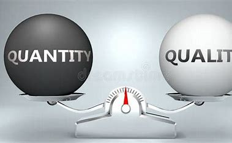

수준 높은 시스템과 새롭고 신선한 컨텐츠를 필요로하며 게임의 정체성이 없고 공장처럼 찍어내는 형식의 양산형게임 보다는
플레이 스타일은 가벼울 수 있더라도 게임의 퀄리티가 결코 낮지 않으며 그 게임만의 정체성이 있는 것이 중요하다고 생각합니다.

누구는 익숙한게 좋고, 다른 누구는 새로운게 좋듯이 사람마다의 취향은 각자 다르기에 모두의 마음을 사로잡을 수는 없다고 생각하지만
사람이라면 누구나 더 질적으로 좋은것을 사용하고 싶어하며
대상만이 가진 특별함에 끌리기 마련이라고 생각합니다.
그렇기에 저는 미래에 게임개발에 대한 열정을 가지고 여러 사람과 함께 질좋은 게임을 만들기 위하여 노력할 것이며
게임을 그저 돈을 버는 생계수단으로 바라보기 보다 상품으로써 바라보아 소비자들에게 좋은 경험을 제공하고 싶습니다.